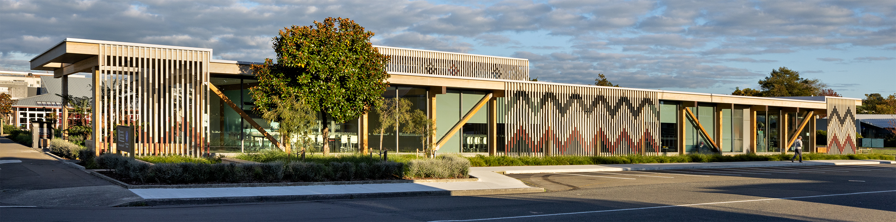
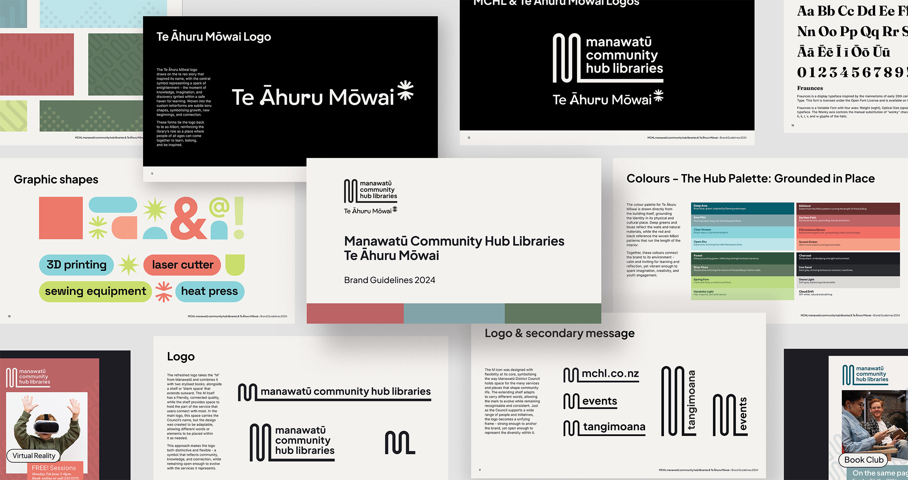
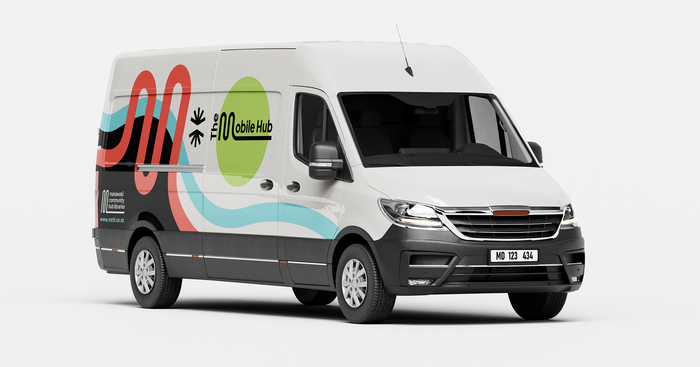
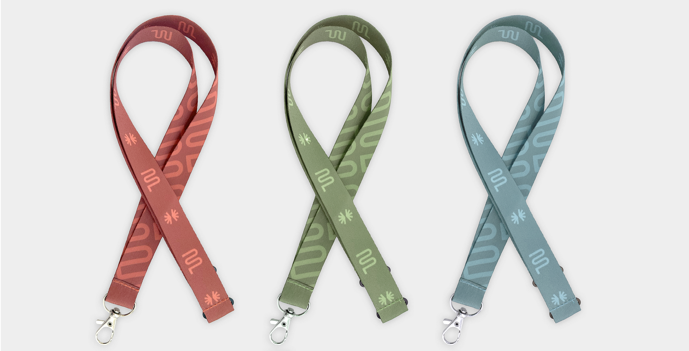

Government · Brand
Manawātū Community Hub Libraries - Te Āhuru Mōwai

The redevelopment of Feilding Library called for a brand built around a dual identity. Te Āhuru Mōwai - a name gifted by local iwi Ngāti Kauwhata meaning "a safe haven for our community to be in, learn in, and thrive in" - names the physical building itself, while the Manawātū Community Hub Libraries brand covers the services delivered across the main library and six satellite locations throughout the district.
The brand identity and guidelines had to work across a genuinely wide range of touchpoints: print and signage, web and digital design, digital signage, vehicle wrapping, marketing collateral, wayfinding, and storytelling projections inside the building itself - each carrying both the cultural significance of Te Āhuru Mōwai and the everyday, practical purpose of a community hub.
The finished facility has become a genuine community focal point, with reading spaces, children's and youth areas, and a Makerspace offering access to tools and technologies - all held together by one coherent identity.


